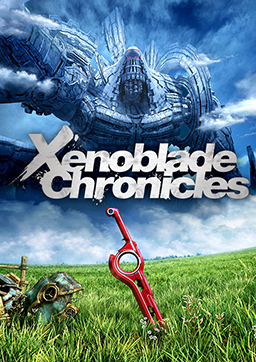
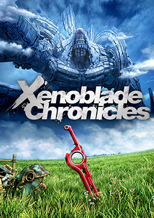

Welcome!
Hi! I’m Christian Dell'Edera — an aspiring game developer, a computer science student, and a huge fan of gaming. I am hoping to create immersive experiences that blend storytelling, art, and technology. Alongside my passion for game development, I continue to work professionally as an actor, bringing characters to life on stage and screen.
My Background
I’m a sophomore at Pace University, majoring in Computer Science with a minor in Game Development. I grew up in Brooklyn, New York, and before diving into code and game engines, I came from the world of performing arts.
As an actor, I’ve always loved character, emotion, and stagecraft — and now I’m applying that same creative energy to game development. I’m fascinated by how games can tell stories, create worlds, and connect people. I believe that the best games are those that resonate with players on a personal level, and I strive to create experiences that do just that.
Gaming Inspiration
I grew up with the GameCube and Wii, and games like Super Mario Galaxy had a huge impact on me. Over time, I discovered my love for deeper narratives and unique mechanics in titles like Persona 5, Xenoblade Chronicles, and Final Fantasy VII Remake & Rebirth. These games opened my eyes to the potential of interactive storytelling and the emotional connections they can create.
 


Those games shaped how I see interactive media — not just as entertainment, but as a powerful form of art and connection.
My Experience in Game Development/Coding
I started building games in Unity during my Game Dev courses at Pace. Every project has been a hands-on opportunity to think like a developer: solving design problems, building mechanics, and refining ideas.
I am also learning other programming languages in my other classes like Python and HTML and CSS. (I even made this website using HTML and CSS!) I’m excited to keep expanding my skills and exploring new technologies in the game development world.
Explore My Work
The games I’ve made so far are part of my coursework — they are my first ever projects in game development. I’m excited to keep expanding my skills and exploring new technologies in the game development world. Check out the Projects page to see what I’ve built. There are more games that I will surely be adding to the page in the future!
Got feedback, ideas, or just want to talk games? Reach out through the Contact page — I’d love to connect!